Bar de vinos y vinoteca · Saavedra
Elegí de la pared. Te lo llevás.
Las 130 etiquetas que ves en el salón, con su precio a mano, para sumar al cajón y pasar a buscar. Y si te quedás: mesa, tapeo y vino por copa.
5,0 · 747 reseñas en Google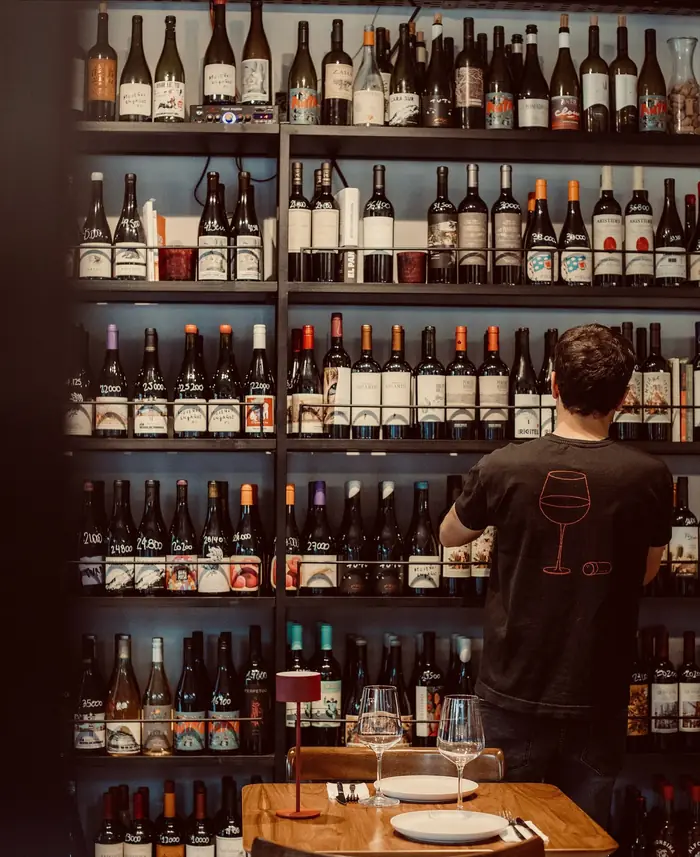
La carta
Para picar, compartir y pedir otra.
Por favor avisanos si tenés alguna alergia u otra restricción alimentaria. · Carta completa del QR
La mesa servida
Señalá y te lo traemos.
La ilustración de la tapa de la carta, servida. Cada plato tiene su punto: pasá el mousedeslizá la mesa y tocá y aparece con su precio.
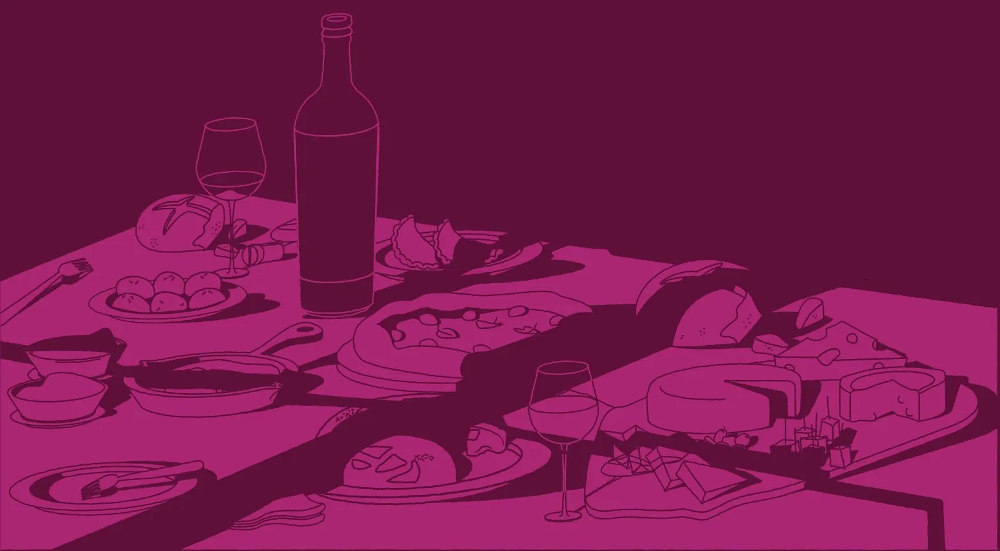
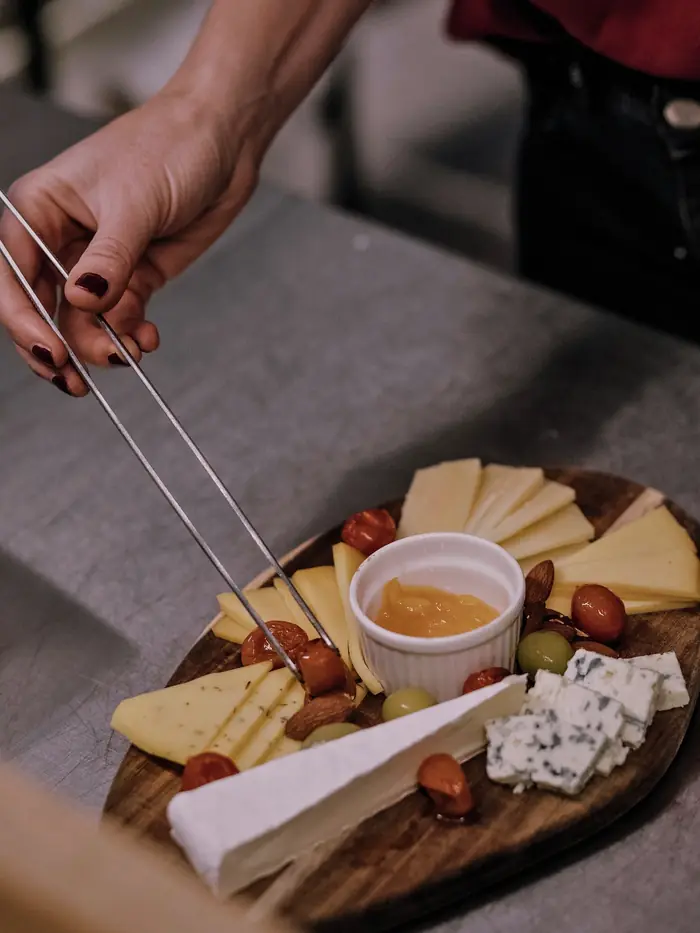
Tabla de quesos
Variedad de quesos, aceitunas, almendras y pan casero
$ 23.000
La vinoteca · 130 etiquetas para llevar
La pared, en tu celu.
Bodegas chicas, naranjos, pet nat y tintos de todo el país. Sumalos al cajón y pasás a buscarlos por Ramallo 2904.
Catas en Chigre
La bodega viene a la mesa.
Cada tanto viene una bodega chica, sirve sus vinos en la mesa larga del salón y te cuenta cada uno. Son pocos lugares: elegí la fecha y anotate.
- 1Elegís una fecha de la agenda.
- 2Te anotás con tu nombre y WhatsApp.
- 3Venís, probás los vinos y picás algo.
Ya pasaron por Chigre: Mil Suelos, Pielihueso, Bira Wines, Arístides, Tutu Wines y Glam Wines.
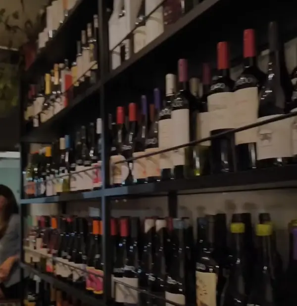
Próximas catas
Avisame las próximas →Demo: las fechas son de ejemplo. El bar las carga, edita y ve los anotados desde su panel.
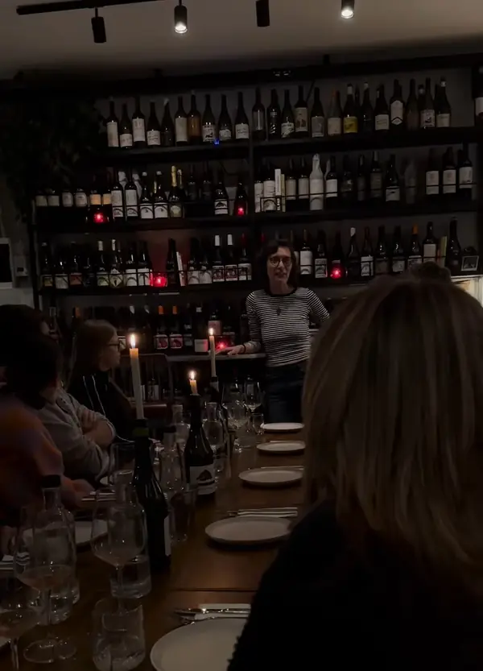
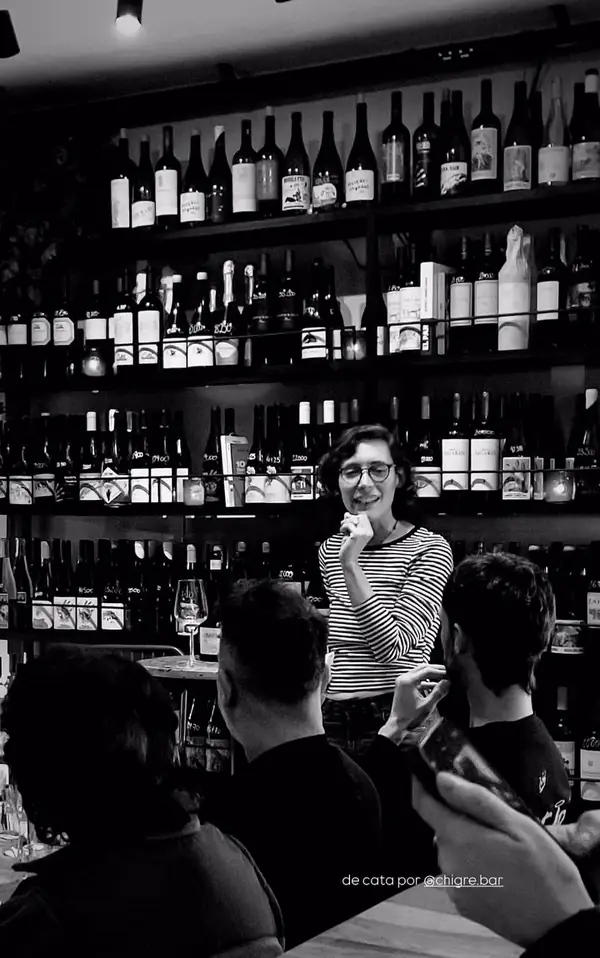
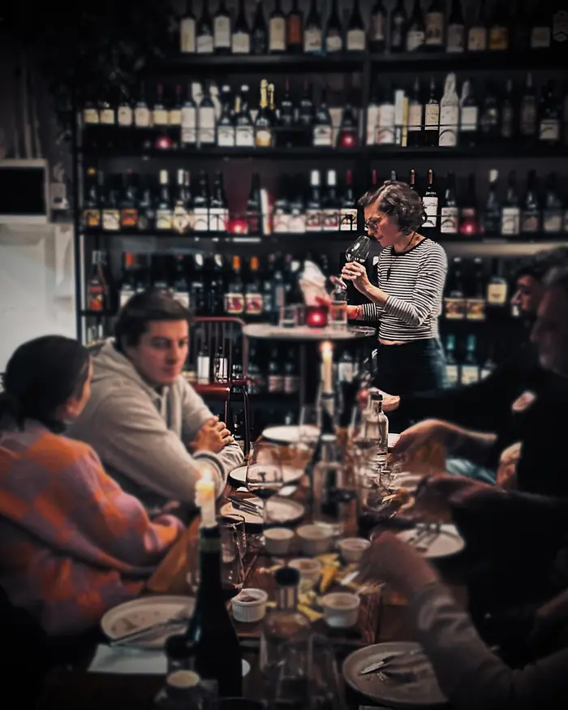
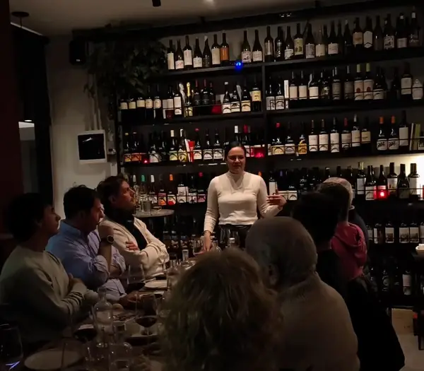
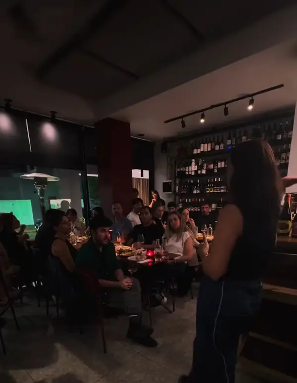
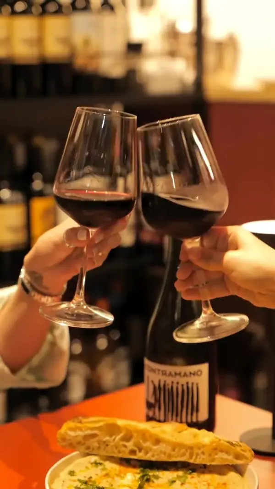
El lugar
Una esquina con la luz prendida.
Ramallo y Conesa. Una pared entera de botellas, mesas de terrazo, la vereda para las noches lindas y Ámbar, que recibe a todos.
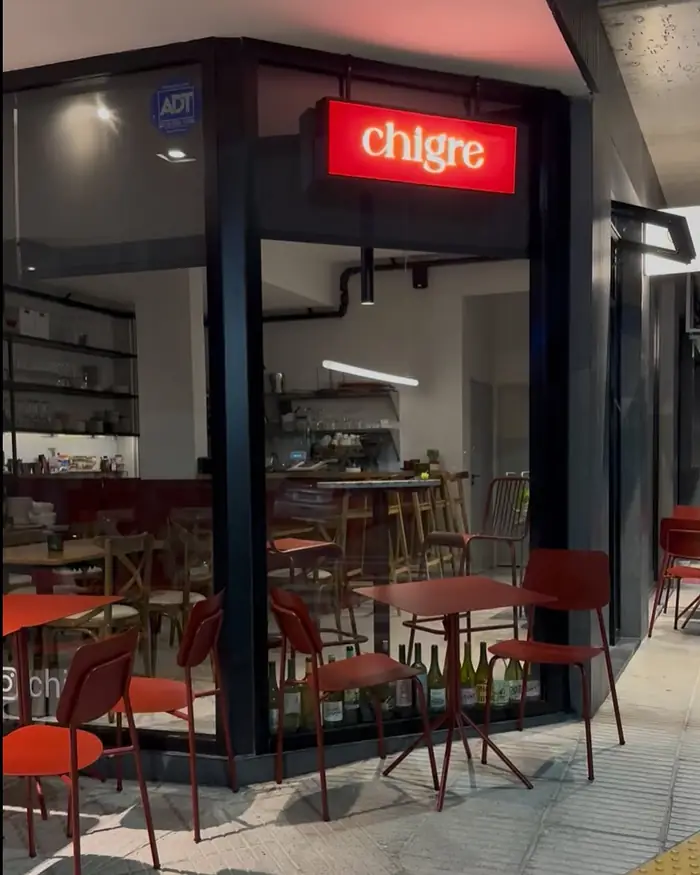
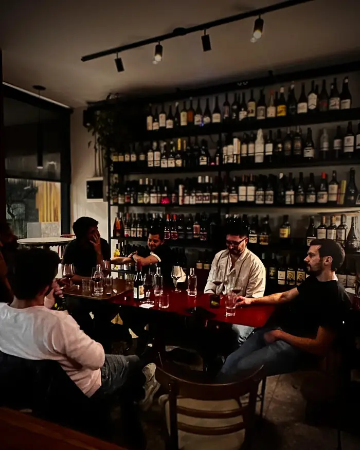
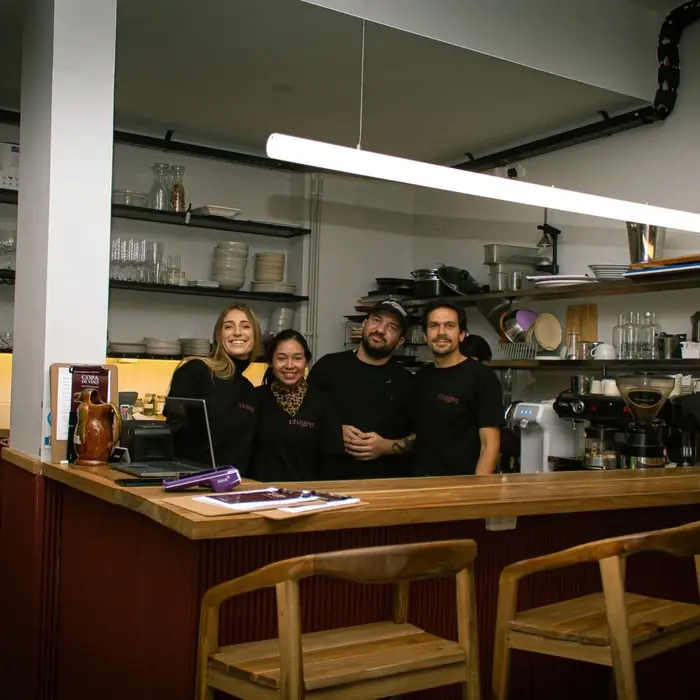
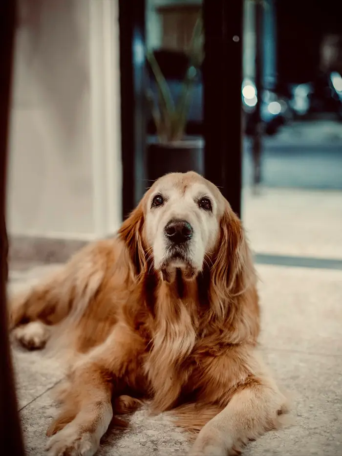
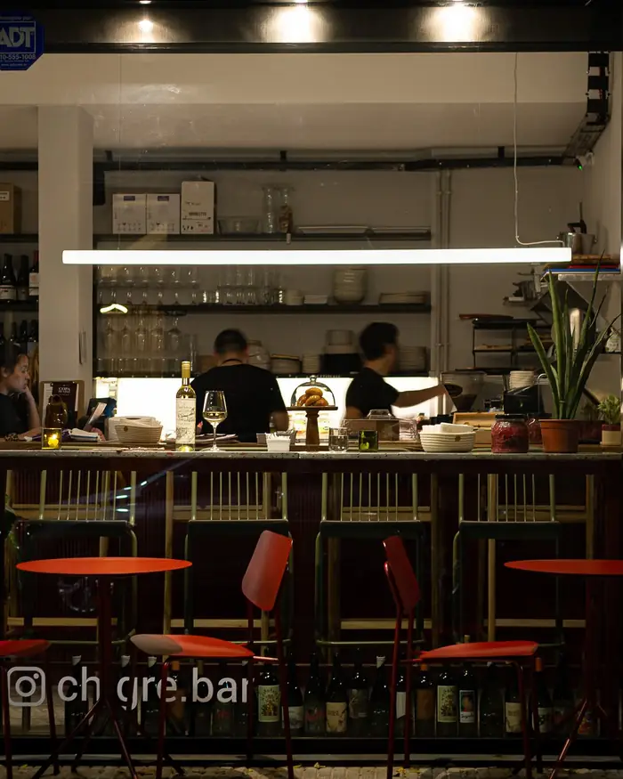
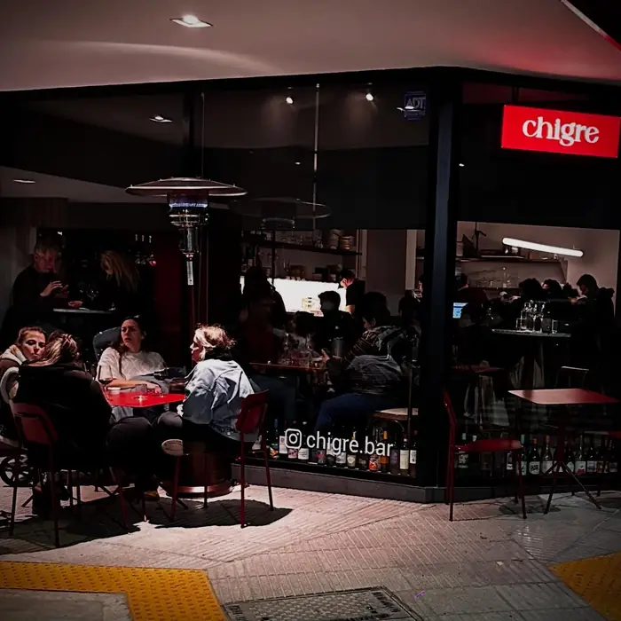
Lo que dicen en Google
5,0 con 747 reseñas.
Reservas
Guardame la mesa.
Mediodía o noche, salón o vereda. Para grupos de más de 8 o un evento, escribinos por WhatsApp.
Horarios
Contacto